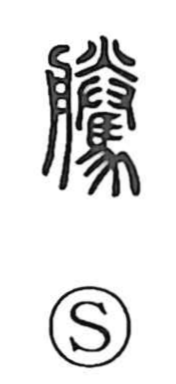

Explanation
Shirakawa takes 謄 as a phono-semantic character. Its original form is 謄, with 朕 functioning as the phonetic element that gives the on reading; the same 朕 appears in related characters like 滕 and 騰, which share the reading tō. In Shirakawa’s view, 朕 originally depicts a tray-like vessel (with 月 reflecting the boat-shaped form) and conveys the act of offering something placed on a plate and presented with both hands; 賸 likewise points to presenting goods or money. Combined with the speech element, 謄 takes on the meaning recorded in the Shuowen: to transcribe in writing, to take down a faithful copy. Hence compounds such as 謄写, ‘to copy by writing,’ and 謄本, ‘a written duplicate of an original,’ used for official copies of family registers and other records.